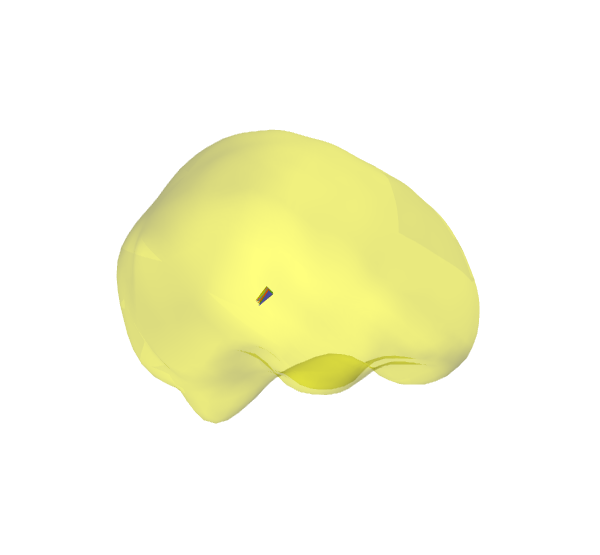

Do a dipole fit¶
This shows how to fit a dipole using mne-python.
For a comparison of fits between MNE-C and mne-python, see:

Script output:
Reading /data1/agramfort/work/src/mne-python/examples/MNE-sample-data/MEG/sample/sample_audvis-ave.fif ...
Read a total of 4 projection items:
PCA-v1 (1 x 102) active
PCA-v2 (1 x 102) active
PCA-v3 (1 x 102) active
Average EEG reference (1 x 60) active
Found the data of interest:
t = -199.80 ... 499.49 ms (Right Auditory)
0 CTF compensation matrices available
nave = 61 - aspect type = 100
Projections have already been applied. Setting proj attribute to True.
Applying baseline correction ... (mode: mean)
BEM : /data1/agramfort/work/src/mne-python/examples/MNE-sample-data/subjects/sample/bem/sample-5120-bem-sol.fif
MRI transform : /data1/agramfort/work/src/mne-python/examples/MNE-sample-data/MEG/sample/sample_audvis_raw-trans.fif
Setting up the BEM model using /data1/agramfort/work/src/mne-python/examples/MNE-sample-data/subjects/sample/bem/sample-5120-bem-sol.fif...
Loading surfaces...
Homogeneous model surface loaded.
...
Python source code: plot_dipole_fit.py
# Author: Eric Larson <larson.eric.d@gmail.com>
#
# License: BSD (3-clause)
from os import path as op
import mne
print(__doc__)
data_path = mne.datasets.sample.data_path()
subjects_dir = op.join(data_path, 'subjects')
fname_ave = op.join(data_path, 'MEG', 'sample', 'sample_audvis-ave.fif')
fname_cov = op.join(data_path, 'MEG', 'sample', 'sample_audvis-cov.fif')
fname_bem = op.join(subjects_dir, 'sample', 'bem', 'sample-5120-bem-sol.fif')
fname_trans = op.join(data_path, 'MEG', 'sample',
'sample_audvis_raw-trans.fif')
fname_surf_lh = op.join(subjects_dir, 'sample', 'surf', 'lh.white')
# Let's localize the N100m (using MEG only)
evoked = mne.read_evokeds(fname_ave, condition='Right Auditory',
baseline=(None, 0))
evoked.pick_types(meg=True, eeg=False)
evoked.crop(0.07, 0.08)
# Fit a dipole
dip = mne.fit_dipole(evoked, fname_cov, fname_bem, fname_trans)[0]
# Plot the result
dip.plot_locations(fname_trans, 'sample', subjects_dir)
Total running time of the example: 13 seconds